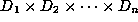
, where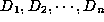
are domains. Each domain has a domain name called an attribute which must be unique. Domains must be finite sets in databases. Table1 is an example of relation.
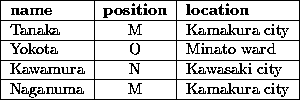
Name, position and location are attributes under which there are attribute values. A row of attribute values is called a tuple, therefore, a relation is a set of tuples. And a relation is an ordered set of attributes, i.e.
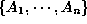
. A relation is sometimes represented as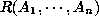
. Since relations have very simple expressions, mathematical discussion of which is also simple. Even though relations are kind of tables, all tables are not recognized as relations. The following two conditions must be met for a table to be a relation.
How can we represent the real world as relations. First, collect attributes of the world and make a table like table1. This flat table representation is a data structure of the relational data model. However, this relation has redundancy, for example in combination of position and location. Furthermore, if you change a combination of name and position, information of position and location might be meaningless. Thus, we normalize the original table(first normal form) taking into account dependencies.
A functional dependency can be defined when a collection of attribute values
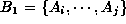
in relation uniquely
decides another collection of attribute values
uniquely
decides another collection of attribute values
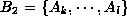
. In this case, is functionally
dependent on and expressed as
is functionally
dependent on and expressed as 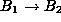
. Suppose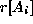
is an attribute value of in a tuple r, the functional
dependency means as follows for arbitrary tuples and .
in a tuple r, the functional
dependency means as follows for arbitrary tuples and .
In table1, there are two functional dependencies, that are
name position and position
position and position location.
If Yokota changes his position, the location of which have to be also
changed. Then the information that position O is in Minato ward will
get lost. That is why we devide table1 into table2.
Generally, we should devide a table into tables in which functional
dependencies are all on their keys. This type of relation is in third
normal form. The decomposition based on functional dependencies includes
second normal form which is different from third normal form in terms
of kind of functional dependencies. Third normal form not only
prevents above mentioned loss of information but also makes tables
simpler excluding repetitive pairs of position and location as you can
see in table2. In other words data redundancy decreases, so
you will have to update only one tuple if the location of position O
changes.
location.
If Yokota changes his position, the location of which have to be also
changed. Then the information that position O is in Minato ward will
get lost. That is why we devide table1 into table2.
Generally, we should devide a table into tables in which functional
dependencies are all on their keys. This type of relation is in third
normal form. The decomposition based on functional dependencies includes
second normal form which is different from third normal form in terms
of kind of functional dependencies. Third normal form not only
prevents above mentioned loss of information but also makes tables
simpler excluding repetitive pairs of position and location as you can
see in table2. In other words data redundancy decreases, so
you will have to update only one tuple if the location of position O
changes.
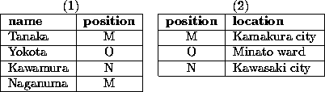
Normalization of relations are done not only by functional dependencies but by multivalued dependencies. Let's look at table 3. This relation consists of three attributes of name, hobby and club. It has no functional dependency.
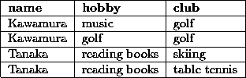
If you devide table3 into table4, redundancy
decreases. Both hobby and club have plural values against name. This
property is called multivalued dependency. In this case the
multivalued dependencies are expressed as
namehobby and
name club, which means that the
original relation can be decomposed into two relations of
club, which means that the
original relation can be decomposed into two relations of
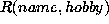
and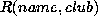
. It is obvious that even if decomposed relations are joined to a relation, no information loss occurs.
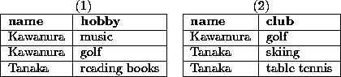
Dependencies other than functional and multivalued dependencies are considered. The most important thing here is that joined relations have the same amount of information as decomposed relations. Muximum relationship among decomposable attributes are called join dependency.
Next, let's think about data manipulations of relations. In the relational model there are relational algebra which centers on set operations and relational calculus which uses first-order predicate calculus.
Relational algebra includes the following five operations.
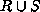
is a set union of tuples in R and those in S.
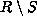
is a set of tuples which belong to R and do not belong to S.
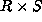
is
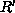
which satisfies a conditional logical formula C out of a relation R is called selection from R by C. The expression of the selection is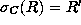
. C is a logical formula composed of attribute names, attribute values, arithmetic operators, comparison operatiors and logical operators. The evaluation of C is done by substituting attribute values of actual tuples for attibute names in C.
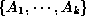
from relation R. The operation is expressed as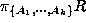
. For example, table3 is projected by name and hobby to make table4(1).
The above basic operations are combined to define the following operations.
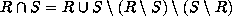
.
 -Join
-Join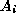
and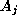
are attributes in R and S respectively. The -join of R and S on
-join of R and S on  and
and  is a relation
denoted by
is a relation
denoted by 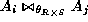
. Here, is an arithmetic comparison operator and if it is an
equal, the operation is called equi-join. Furthermore, if the
only one of the same attributes is left and the other is
removed from the equi-joined relation, the operation is called
natural-join.
is an arithmetic comparison operator and if it is an
equal, the operation is called equi-join. Furthermore, if the
only one of the same attributes is left and the other is
removed from the equi-joined relation, the operation is called
natural-join.
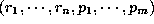
and .
The division
.
The division 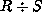
is an operation to find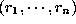
for which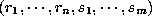
are included in tuples of R for all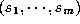
. It is obvious that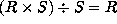
.
Those mentiond operations including the first five basic ones and the latter three composites are so-called relational algebra. On the other hand, relational calculus is generaly a set of tuples
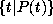
which satisfies a logical formula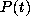
where an argument t is a tuple variable. It has been proved that all the relational algebraic operations can be translated in relational calculus and if the scope of tuple variables are specified, they are equivalent.